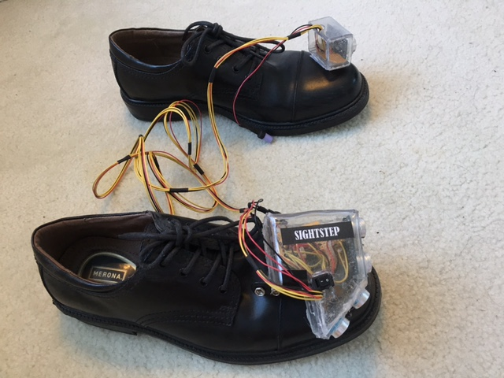
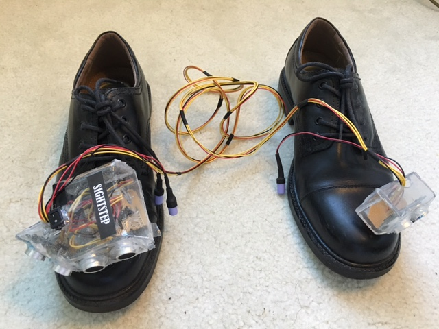

I created this ultrasonic based device to replace the walking stick for visually impaired people. I used an Arduino to monitor 3 ultrasonic sensors and control the output of 3 vibration motors. The vibration motors would notify the user of the distance and direction of an obstruction. The vibration motors would be set to low vibration when an obstruction was within 100cm of the user. They would be set to high vibration when an obstruction was within 50cm of the user. Due to the placement of the ultrasonic sensors, the user was able to get a 160 degree "view" of where they were facing. With this project, I placed 5th in Texas State Science and Engineering Fair, as well as receiving many awards at the district and county level.  